← Index · ← Previous · Next →
Authors: Nilanjana Datta
Type: theory · Category: quantum information and computing · PDF: https://arxiv.org/pdf/2605.20092v1
Analysis basis: full PDF text, analyzed in chunks
Topic relevance: 🔥 entanglement & information structure 4/5 · correlated / nonlocal dissipation 2/5 · non-equilibrium dynamics 2/5 · quantum measurements 2/5
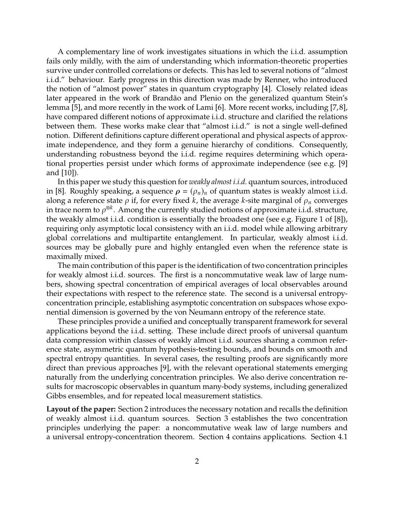
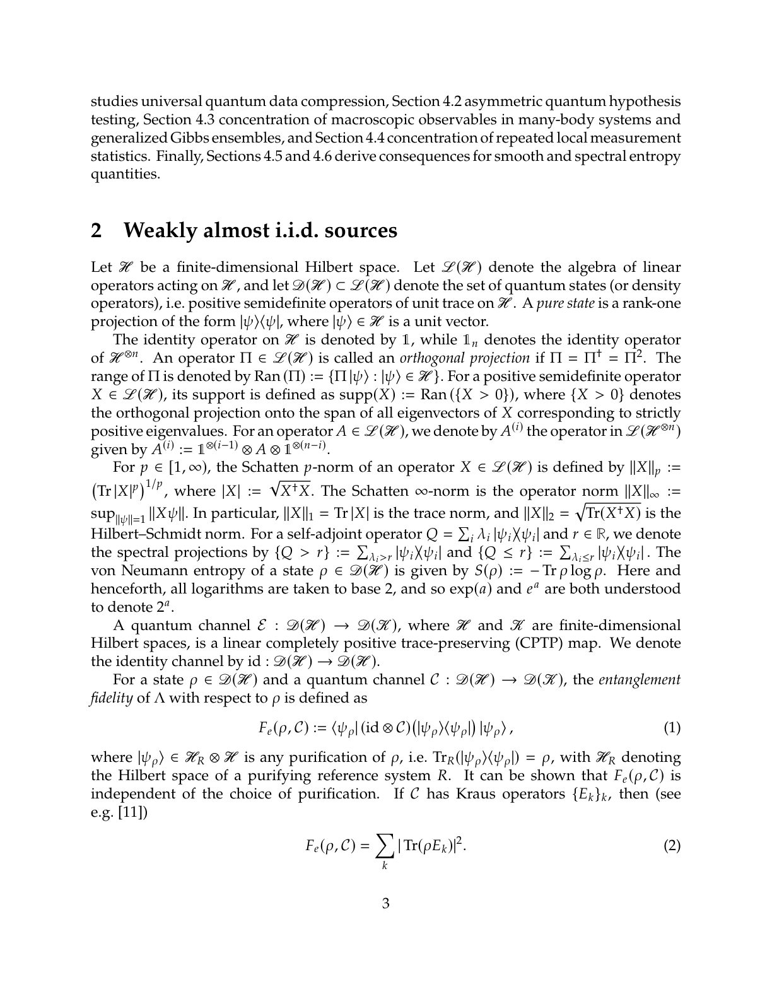
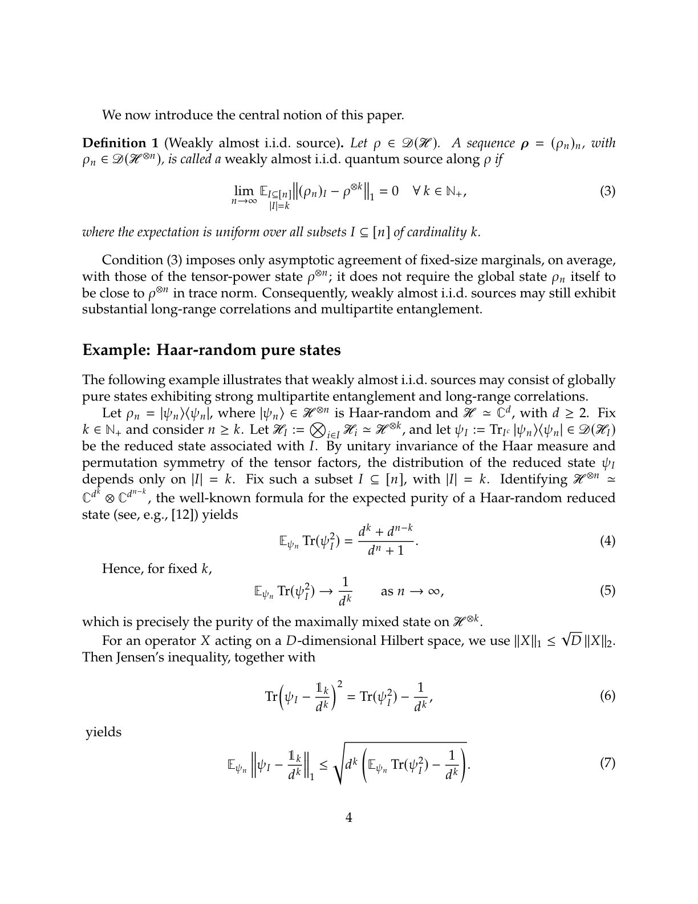
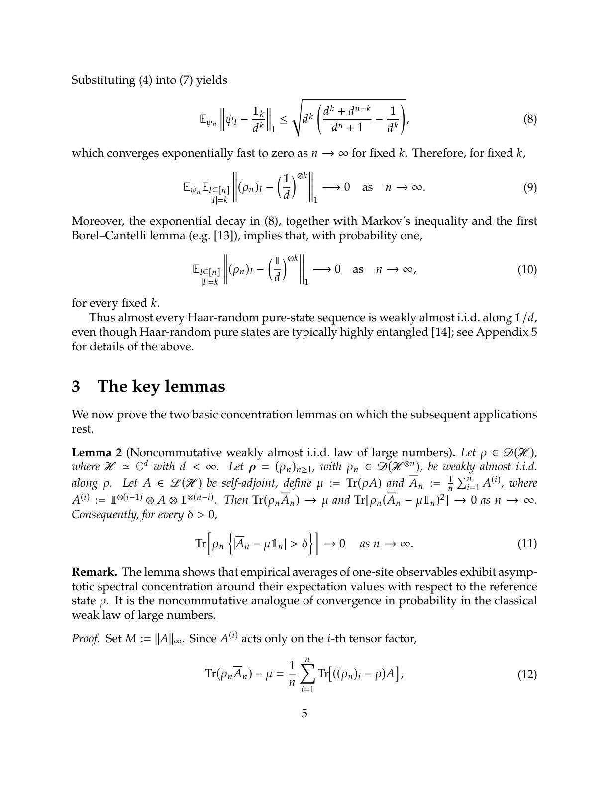
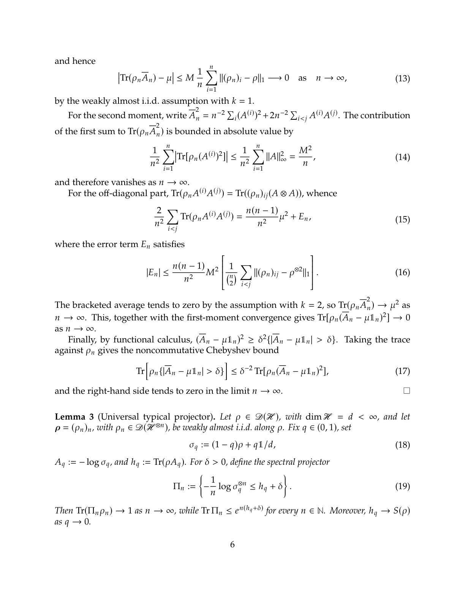
Summary. This paper proves that quantum sources with significant global entanglement can still exhibit predictable, i.i.d.-like behavior if their local marginals converge to a common reference state. It establishes that fundamental tasks like data compression and hypothesis testing are robust to these correlations, with rates determined by the reference state's entropy. These results extend the applicability of information-theoretic laws to complex many-body systems and generalized Gibbs ensembles.
Why it may be interesting. This is highly relevant for many-body dynamics and open quantum systems as it provides a rigorous framework to predict the macroscopic behavior and measurement statistics of highly entangled, non-i.i.d. states using a simple reference state.
Main problem. Investigating the information-theoretic properties, such as entropy concentration and typicality, for quantum sources that deviate from the standard i.i.d. assumption by allowing global correlations and entanglement.
Main result. The paper establishes a noncommutative weak law of large numbers and a universal entropy-concentration principle for weakly almost i.i.d. sources, proving that optimal compression rates and hypothesis testing exponents remain governed by the reference state's von Neumann entropy.
Method. The author uses mathematical tools including Schatten p-norms, the information-spectrum approach, and spectral projection techniques, alongside probabilistic tools like the Borel-Cantelli lemma and Chebyshev's inequality.
Model / system. The study focuses on sequences of multipartite quantum states (weakly almost i.i.d. sources) where fixed-size marginals converge to tensor powers of a reference state, including examples like Haar-random pure states and Generalized Gibbs Ensembles.
Key observables. Empirical averages of local observables, von Neumann entropy, smooth zero-Renyi entropy, and spectral sup-entropy rate.
Important parameters / regimes. The asymptotic limit as the number of sites n approaches infinity, the reference state rho, and the dimension d of the Hilbert space.
Assumptions / limitations. The theory assumes the 'weakly almost i.d.' condition, where local marginals converge to a reference state, and is formulated for finite-dimensional Hilbert spaces.
Paper structure. The paper begins by defining weakly almost i.i.d. sources, then establishes a noncommutative weak law of large numbers and an entropy-concentration principle, followed by applications to quantum data compression, asymmetric hypothesis testing, and thermodynamic typicality in many-body systems.
Weakly almost i.i.d. quantum sources are sequences of multipartite states whose fixed-size marginals converge, on average, to tensor powers of a reference state, while allowing arbitrary global correlations and entanglement. We establish two concentration principles for such sources: a noncommutative weak law of large numbers for empirical observables, and a universal entropy-concentration principle showing asymptotic concentration on subspaces of exponential dimension governed by the von Neumann entropy of the reference state. These concentration principles provide a unified and conceptually transparent approach to several information-theoretic applications beyond the i.i.d. setting, including direct proofs of universal compression within classes of weakly almost i.i.d. sources sharing a common reference state, asymmetric quantum hypothesis-testing bounds, concentration results for macroscopic observables in quantum many-body systems including generalized Gibbs ensembles and for repeated local measurement statistics, as well as bounds on smooth- and spectral entropy quantities.
Authors: Erik Fitzner, Byungjin Lee, Junhyeok Hur, Minseok Kim, Benedikt Schneider, Jae-yoon Choi, Björn Sbierski
Type: both · Category: quantum gases · PDF: https://arxiv.org/pdf/2605.20124v1
Analysis basis: full PDF text, analyzed in chunks
Topic relevance: 🔥 analog quantum simulation 4/5 · QC/QI experiment 3/5 · non-equilibrium dynamics 3/5
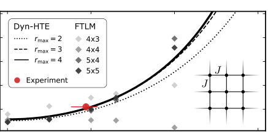
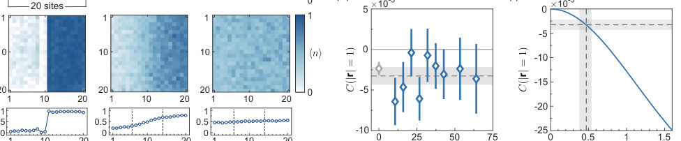
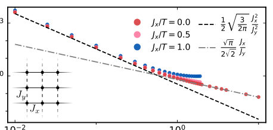
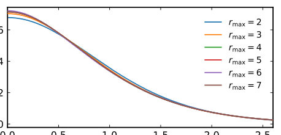
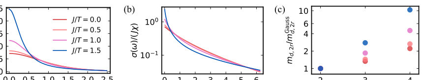
Summary. This paper presents a combined theoretical and experimental study of spin diffusion in the 2D XY model. By using a new high-temperature expansion method and an optical lattice simulator, the authors achieve the first quantitative match between theory and experiment for 2D spin transport. This work validates the accuracy of large-scale quantum simulation platforms for studying many-body dynamics.
Why it may be interesting. It provides a breakthrough in the quantitative validation of 2D quantum simulators and demonstrates a new theoretical tool (Dyn-HTE) for studying transport in many-body chaotic systems.
Main problem. Quantifying spin diffusion in the two-dimensional XY model at finite temperature and resolving discrepancies between previous experimental data and theoretical predictions.
Main result. Achieved excellent agreement between experimental measurements of the spin diffusion constant (D = 0.82(3)J) and theoretical predictions using the Dyn-HTE method, providing a quantitative validation of 2D quantum simulation platforms.
Method. The study combines a novel Dynamical High-Temperature Expansion (Dyn-HTE) theory with experiments using an optical lattice hard-core boson quantum simulator.
Model / system. A spin-1/2 XY model on a square lattice, implemented via an optical lattice of ultracold bosonic 7Li atoms in the hard-core boson regime.
Key observables. Spin diffusion constant (D), spin conductivity (sigma(omega)), dynamical structure factor (DSF), spin current, and density imbalance.
Important parameters / regimes. Dimensionless inverse temperature (J/T), coupling strengths (Jx, Jy), and the anisotropy regime (Jy/Jx).
Assumptions / limitations. The theory relies on the high-temperature expansion being accurate down to T approx J/4 and uses a continued-fraction representation for analytic continuation.
Figures summary. Figure 1 compares the temperature dependence of the spin diffusion constant across theory and experiment; Figure 4 shows the frequency-resolved spin conductivity and its convergence with expansion order.
Paper structure. The paper introduces the problem of 2D spin diffusion, presents the Dyn-HTE theoretical framework, describes the experimental setup using ultracold atoms, demonstrates the quantitative agreement between theory and experiment, and discusses scaling laws in anisotropic regimes.
We present a combined theory-experiment study to quantify spin diffusion in the square lattice quantum spin-1/2 XY model at finite temperature. On the theory side, we leverage a recently developed dynamical high-temperature expansion method to faithfully capture the long spatiotemporal scales of the hydrodynamic regime. Experimental results are obtained from an optical lattice hard-core boson quantum simulator. The excellent agreement of spin diffusion constants marks a breakthrough in spin-transport beyond one dimension and for the quantitative validation of state-of-the-art quantum simulation platforms. We also provide theory predictions for future experiments on dynamic spin conductivity or anisotropy-induced integrability breaking.
Authors: Luciano Manara, Andrea Smirne, Bassano Vacchini
Type: theory · Category: quantum information and computing · PDF: https://arxiv.org/pdf/2605.19753v1
Analysis basis: full PDF text, analyzed in chunks
Topic relevance: 🔥 entanglement & information structure 4/5 · methods for driven-dissipative 3/5 · non-equilibrium dynamics 3/5
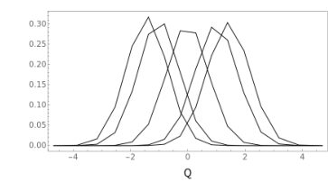
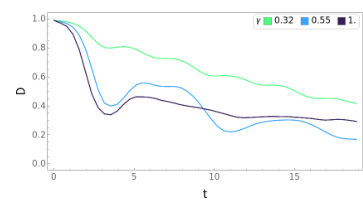
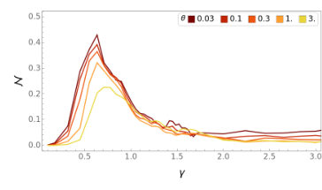
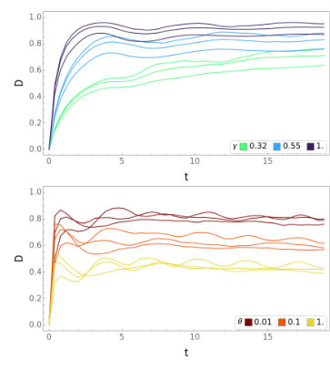
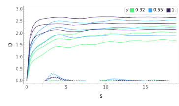
Summary. This paper validates the Adapted Caldeira-Leggett model as an efficient tool for studying non-Markovianity and information backflow. It demonstrates that memory effects in this model arise from the interplay between system-environment correlations and changes in the environment's state. The results confirm the model's reliability for exploring the fundamental physics of quantum decoherence and memory.
Why it may be interesting. It provides a validated, computationally efficient framework for studying complex non-Markovian dynamics and the microscopic origins of memory effects in open quantum systems without needing full microscopic models.
Main problem. The study investigates whether the computationally efficient Adapted Caldeira-Leggett (ACL) model can accurately reproduce the non-Markovian features and information backflow found in the standard Caldeira-Leggett model.
Main result. The ACL model is validated as a reliable proxy for studying memory effects, showing that information backflow is driven by a combination of system-environment correlations (sensitive to coupling strength) and changes in the environmental state (sensitive to temperature).
Method. The authors use a density matrix formalism to track system and environment degrees of freedom, comparing distinguishability quantifiers like trace distance and Jensen-Shannon divergence to quantify non-Markovianity.
Model / system. The system is a truncated harmonic oscillator interacting with a bosonic environment modeled via Hermitian random matrices from the Gaussian Unitary Ensemble (GUE). The Hamiltonian includes position coupling with strength gamma.
Key observables. Information backflow, system-environment correlations, environmental state distinguishability, and trace distance/Jensen-Shannon divergence.
Important parameters / regimes. Coupling strength (gamma), bath temperature (theta), and Hilbert space dimensions (Ns, Ne).
Assumptions / limitations. The environment is modeled using random matrices rather than a specific microscopic structure, and the system and environment are assumed to start in an uncorrelated (factorized) state.
Figures summary. Figure 1 demonstrates the validity of the truncated Hilbert space; Figure 2 shows the time evolution of trace distance; Figure 4 illustrates how correlations and environmental changes scale with coupling and temperature; Figure 5 compares the proposed upper bound to actual distinguishability variations.
Paper structure. The paper begins by defining the ACL Hamiltonian and validating it for decoherence, then moves to quantifying non-Markovianity via information backflow, analyzes the microscopic drivers (correlations vs. environmental changes), and concludes by comparing different distinguishability quantifiers.
In this work, we investigate the non-Markovian features of the Adapted Caldeira-Leggett model, a computationally efficient framework recently proposed to capture the essential physics of the standard Caldeira-Leggett model. While this effective model has been previously validated for decoherence and einselection, its ability to reproduce memory effects remains to be explored. By exploiting the model's capability to explicitly track both system and environment degrees of freedom, we provide a detailed characterization of non-Markovianity through the lens of information backflow. We evaluate the buildup of system-environment correlations and the corresponding modifications of the environmental state, assessing a quantitative upper bound for the revival of distinguishability in the reduced dynamics. Our results, obtained by comparing different distinguishability quantifiers such as trace distance and the square root of the Jensen-Shannon divergence, show that while correlations are primarily sensitive to coupling strength, environmental state changes are more heavily influenced by temperature. Our analysis substantiates the physical interpretation of the distinguishability-based approach to non-Markovianity, and confirms this variant of the Caldeira-Leggett model as a reliable tool for exploring the microscopic origins of different fundamental phenomena in quantum mechanics.
Authors: Yuehan Xu, Qijun Zhang, Xiaojuan Liao, Zidong Gao, Piao Tan, Xufeng Liang, Hanwen Yin, Peng Huang, Tao Wang, Guihua Zeng
Type: both · Category: quantum information and computing · PDF: https://arxiv.org/pdf/2605.20077v1
Analysis basis: full PDF text, analyzed in chunks
Topic relevance: 🔥 QC/QI experiment 4/5 · 🔥 quantum optics experiment 4/5 · quantum measurements 2/5
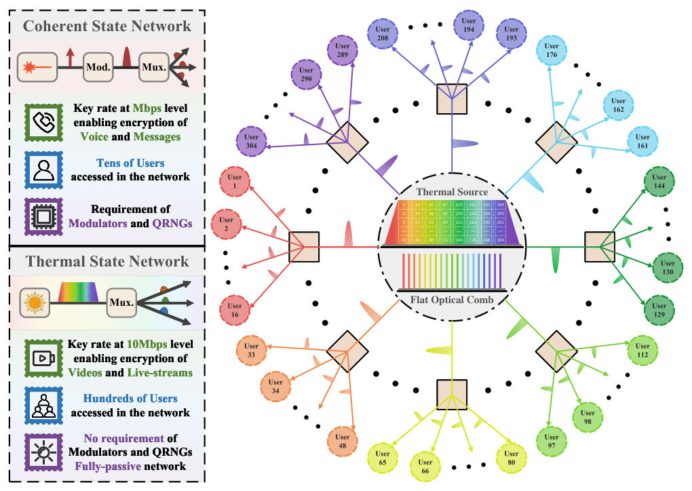
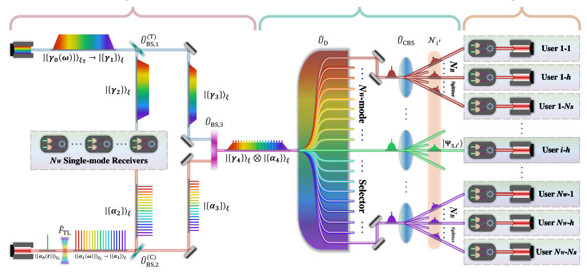
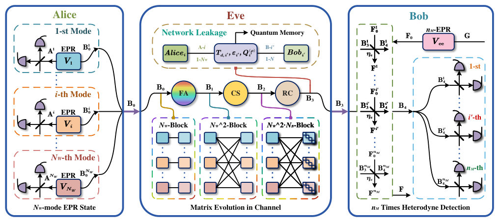
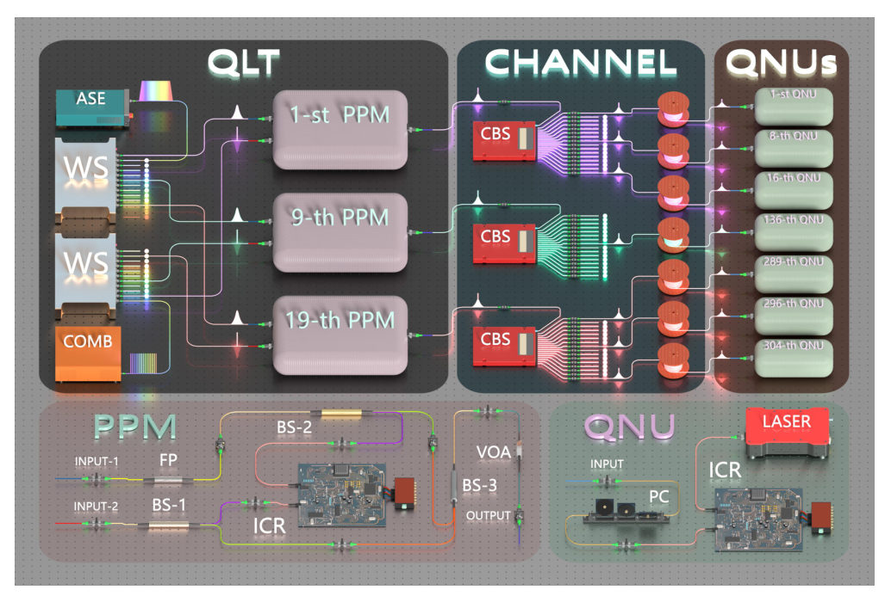
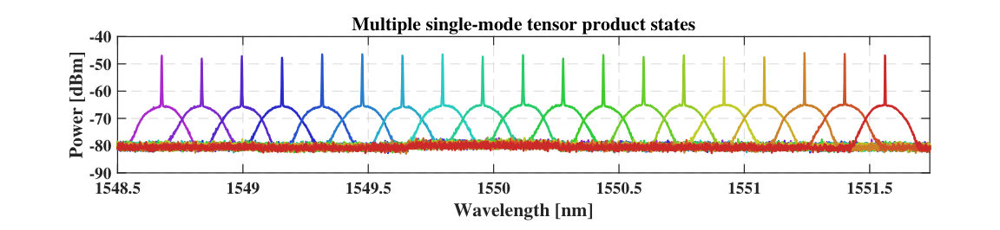
Summary. The paper proposes and experimentally demonstrates a passive quantum access network powered by a single thermal source. It achieves a massive capacity of 304 users and a 13 Gbps aggregate key rate, providing a scalable and low-complexity solution for integrating quantum security into modern telecommunication infrastructures.
Why it may be interesting. This work is highly relevant to quantum optics and open quantum systems due to its use of broadband thermal states, multi-mode Gaussian states, and the management of polychromatic phase-tracking and correlations in large-scale networks.
Main problem. Current Quantum Key Distribution Access Networks (QANs) cannot meet the high-speed, large-capacity demands of modern classical networks, facing a trade-off between hardware complexity and signal loss.
Main result. Demonstrated a passive Thermal-State QAN (TS-QAN) supporting 304 users with an aggregate secret key rate of 13 Gbps, exceeding the 10 Gbps benchmark of classical networks.
Method. Uses the Glauber-Sudarshan P representation to treat broadband thermal states as Gaussian coherent-state ensembles and employs Electro-Optic comb beacons for polychromatic phase tracking.
Model / system. A passive optical network architecture (TS-QAN) consisting of a Quantum Light Transmitter (QLT) with a single thermal source, a distribution network using beam splitters and wavelength division multiplexers, and multiple Quantum Network Units (QNUs) using coherent detection.
Key observables. Aggregate secret key rate (SKR), excess noise, modulation variance, reconciliation efficiency, and spectral flatness.
Important parameters / regimes. 304 users, 13 Gbps aggregate SKR, 19 frequency modes, 5 THz bandwidth, and distances up to 30 km.
Assumptions / limitations. The analysis focuses on the asymptotic regime and assumes an 'all-measured' security policy; the model is a proof-of-principle and does not cover all possible correlated excess-noise attacks.
Figures summary. Fig 1 compares coherent vs. thermal state networks and illustrates the TS-QAN implementation; Fig 2 shows the Prepare-Measure model; Fig 3 depicts the Entanglement-Based model; Fig 4 details the experimental setup; Fig 5 shows spectral measurements.
Paper structure. The paper identifies the performance gap in QANs, proposes the TS-QAN architecture, develops the theoretical framework (PM and EB models), details the experimental implementation, and provides security and performance analysis.
Quantum Key Distribution (QKD) provides secure keys for classical communications through one-time-pad (OTP) encryption with physical-law security. Advanced PON-based Classical Access Networks (CANs) support up to 256 users with a total rate of 10 Gbps (10-Gbps @ 256-users). The equivalent rate demand of OTP encryption requires QKD Access Networks (QANs) to reach comparable performance, yet state-of-the-art PON-based QANs remain far from this standard. To address this gap, we propose a passive Thermal-State QAN (TS-QAN) distributing polychromatic quantum randomness from a single thermal source and supporting 304 users with an aggregate secret key rate (SKR) of 13 Gbps (13-Gbps @ 304-users). This performance is enabled by three features. First, broadband thermal states with Bose-Einstein statistics can be represented, through the Glauber-Sudarshan representation, as high-bandwidth Gaussian coherent-state ensembles across frequency modes, eliminating many active modulators and quantum random number generators (QRNGs). Second, Electro-Optic (EO) comb beacons provide time-varying polychromatic phase tracking, so each frequency-mode thermal signal can be coherently measured with a Local Local Oscillator (LLO) aided by its beacon, without large-scale phase-locking networks. Third, state broadcasting allows each user to obtain independent final keys via reverse reconciliation after accounting for residual broadcast-induced correlations, expanding network capacity with small SKR losses. Experimentally, we verify a 13-Gbps @ 304-users TS-QAN using Continuous-Variable QKD (CV-QKD) under covariance-matrix-based network security analysis including multimode Holevo leakage and broadcast correlations. This work meets the SKR and capacity demands from CAN to QAN: 13-Gbps @ 304-users satisfies the 10-Gbps @ 256-users benchmark and provides a scalable solution for modern telecommunication systems.
Authors: Stefano Scopa, Philip Zechmann, Michael Knap, Jacopo De Nardis, Alvise Bastianello
Type: theory · Category: quantum gases · PDF: https://arxiv.org/pdf/2605.18957v1
Analysis basis: full PDF text, analyzed in chunks
Topic relevance: 🔥 non-equilibrium dynamics 4/5 · analog quantum simulation 3/5 · Kondo & dissipative impurity 2/5
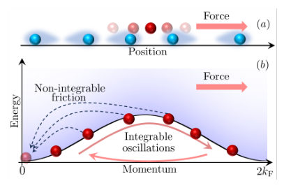
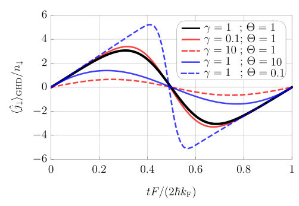
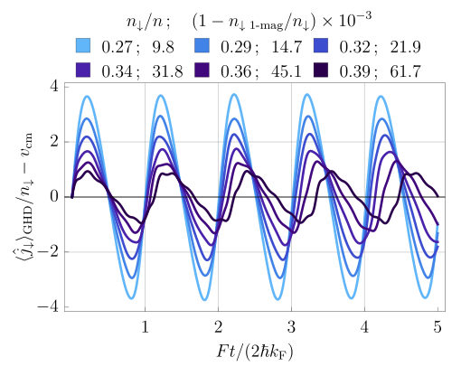
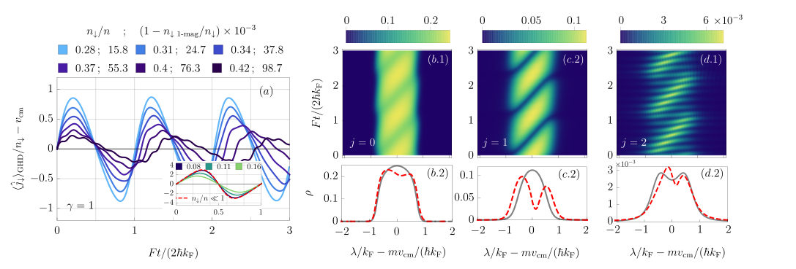
Summary. This paper shows that Bloch oscillations can occur in a continuous gas without a physical lattice due to strong interactions. Using Generalized Hydrodynamics, the authors prove these oscillations are stable at finite temperature and density, though their frequency is modified by many-body excitations.
Why it may be interesting. It demonstrates how strong interactions in a continuum can mimic periodic lattice potentials, providing a new way to study Bloch physics in ultracold atom experiments using controllable impurity densities.
Main problem. Investigating the emergence and stability of Bloch oscillations in a continuous, lattice-free system driven by a constant force.
Main result. The authors derive a Generalized Hydrodynamics (GHD) theory showing that Bloch oscillations persist at finite impurity density and temperature, with the oscillation period being renormalized by two-magnon bound states.
Method. The study uses Generalized Hydrodynamics (GHD) combined with the Thermodynamic Bethe Ansatz (TBA) and numerical simulations using the method of characteristics.
Model / system. The system is a 1D integrable two-component Yang-Gaudin model consisting of a host gas of fermions and a density of impurities subjected to a constant force.
Key observables. Impurity current, center-of-mass velocity, effective acceleration, and the evolution of the many-body Generalized Gibbs Ensemble (GGE).
Important parameters / regimes. Interaction strength (gamma), temperature (Theta), impurity density ratio (n_down/n), and force strength (F).
Assumptions / limitations. The numerical approach assumes a truncation of the string hierarchy (up to j=2) and uses a large rapidity cutoff.
Figures summary. Figure 1 compares single-impurity oscillations in integrable vs non-integrable cases; Figure 2 shows the effect of interaction and temperature on impurity current; Figure 3 illustrates frequency renormalization due to two-magnon bound states; Figure 4 shows the impact of varying impurity density.
Paper structure. The paper introduces the concept of lattice-free Bloch oscillations, presents the GHD framework applied to the Yang-Gaudin model, analyzes specific limits (low density, weak interaction, and impenetrable), and concludes with numerical verification of the stability of these oscillations.
Objects subjected to a constant force generally increase their velocity over time. This expectation fails whenever their energy is a smooth and periodic function of momentum, resulting in periodic Bloch oscillations instead. Periodic dispersions, typical of lattice systems, can also emerge in continuum media through strong interactions. Here, we study the phenomenon of such Bloch oscillations in the absence of a lattice in a paradigmatic model of integrable quantum gases: the two-component Yang-Gaudin model. We derive a generalized-hydrodynamic theory of Bloch oscillations for a finite density of impurities embedded in a homogeneous interacting background, which we show to persist superimposed to a drift due to the acceleration of the center of mass. Moreover, we show the single-impurity oscillation period is renormalized at finite impurity density when two-magnon bound states are populated. Our results are relevant for ultracold atom experiments, where impurities can be created at controllable densities.
Authors: Gregory D. Scholes
Type: theory · Category: quantum information and computing · PDF: https://arxiv.org/pdf/2605.20111v1
Analysis basis: full PDF text, analyzed in chunks
Topic relevance: 🔥 quantum measurements 4/5 · entanglement & information structure 3/5 · correlated / nonlocal dissipation 2/5
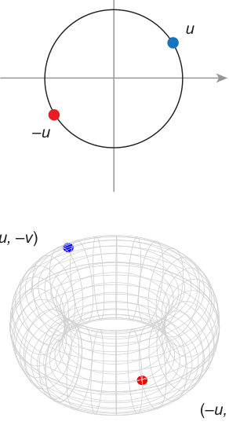
Summary. This paper proposes that the 'collapse' of the wavefunction in entangled systems is driven by randomly encoded 'contextual phases' that determine local measurement outcomes. By treating measurement as an interference process within a quotient space, the author explains how correlations are maintained across separated subsystems without violating Bell's theorem or requiring non-local communication.
Why it may be interesting. It offers a potential mechanistic resolution to the EPR paradox and the measurement problem by reinterpreting collapse as an interference phenomenon, which is highly relevant to the foundations of quantum optics and open quantum systems.
Main problem. The paper seeks to provide a physical mechanism for wavefunction collapse during the measurement of spatially separated entangled subsystems, addressing the ad hoc nature of the projection postulate.
Main result. The author proposes that a 'contextual phase' is randomly installed into entangled states, which directs the collapse of local superpositions to specific classical outcomes, thereby explaining correlations without requiring superluminal interaction.
Method. The work uses a mathematical framework involving quotient space theory and the expansion of entangled states into different 'classes' of state vectors to show how phase encoding determines measurement outcomes.
Model / system. The model focuses on entangled photon pairs in the singlet state (Psi-), as well as other maximally entangled states like GHZ and molecular excitons, treated within separated local Hilbert spaces.
Key observables. Polarization states (H, V, H', V'), Pauli operators (sigma_z tensor sigma_z, sigma_x tensor sigma_x), and transition dipole strength.
Important parameters / regimes. Contextual phases (randomly distributed), measurement basis settings, and the distinction between composite and separated subsystem regimes.
Assumptions / limitations. It is assumed that contextual phases are randomly fixed in an entangled state during its preparation.
Figures summary. Figure 1 illustrates polarization relationships; Figure 2a shows geometric analysis of phase equivalence; other figures illustrate the relationship between composite and separated systems.
Paper structure. The paper begins by defining the problem of collapse and nonlocality, introduces a mathematical model using quotient spaces and contextual phases, provides consistency tests for the proposal, and applies the mechanism to specific systems like photon pairs and GHZ states.
The specific advance of this work is to propose a mechanism by which superpositions collapse during measurement of the separated subsystems of entangled quantum states. It is shown how the phase that locks together entangled states plays a special role in the measurement of isolated subsystems. This `contextual' phase is installed randomly into the entangled state, and decides the measurement outcomes for the subsystems by directing the collapse of each superposition to a particular classical outcome when a subsystem is measured. The measuring apparatus thus obtains a classical read-out of the quantum correlations embedded in an entangled state. More broadly, these results solidify the theory of measurement of quantum superpositions.
Authors: Nahual Sobrino, Stefan Kurth
Type: theory · Category: strongly correlated electrons · PDF: https://arxiv.org/pdf/2605.20083v1
Analysis basis: full PDF text, analyzed in chunks
Topic relevance: 🔥 Kondo & dissipative impurity 4/5 · non-equilibrium dynamics 3/5 · methods for driven-dissipative 2/5
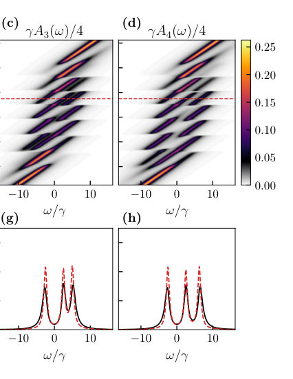
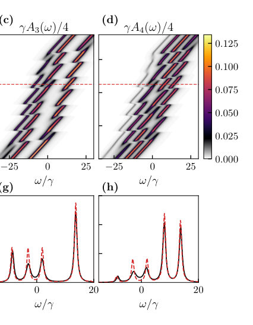
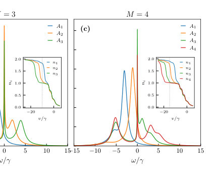
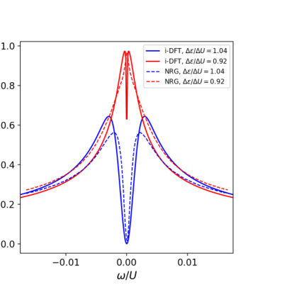
Summary. This paper introduces an efficient i-DFT-based method to compute the spectral and transmission properties of multiple interacting quantum dots. It demonstrates that this approach can accurately capture complex many-body phenomena like the Kondo effect and quantum phase transitions with much lower computational cost than traditional methods. The framework is particularly useful for studying larger multi-dot systems where exact many-body solutions are numerically inaccessible.
Why it may be interesting. The paper provides a highly efficient numerical alternative to expensive many-body techniques like NRG or DMRG for studying the transport and spectral properties of multi-site correlated systems, which is directly relevant to many-body dynamics and open quantum systems.
Main problem. Developing a computationally efficient framework to calculate the spectral and transmission properties of multiple correlated quantum dots, especially in regimes where many-body effects like the Kondo effect are significant.
Main result. The i-DFT framework successfully captures complex phenomena such as the Coulomb blockade, Kondo resonances, and quantum phase transitions at a fraction of the computational cost of traditional many-body methods.
Method. Steady-state density functional theory (i-DFT) using constructed exchange-correlation functionals and an 'ideal STM limit' to extract spectral properties.
Model / system. Multiple correlated quantum dots (M=2, 3, 4) connected to non-interacting metallic electronic reservoirs, modeled with a Hamiltonian including on-site and inter-site electron-electron interactions.
Key observables. Local spectral functions, transmission spectral functions, site densities, steady-state current, and differential conductance.
Important parameters / regimes. On-site energies, interdot hopping, interaction strengths (U, U'), temperature (T), bias voltage (V), and coupling/broadening matrices.
Assumptions / limitations. Use of the wide band limit (frequency-independent broadening), the ideal STM limit (infinitesimally weak probe coupling), and exchange-correlation functionals restricted to density-density interactions.
Figures summary. Figure 1 shows local spectral functions for a 4-dot system in the Coulomb blockade regime; Figure 2 illustrates spectral weight redistribution due to interdot hopping; Figure 3 displays Kondo resonances for various dot configurations; Figure 4 shows transmission spectral functions and the transition through a quantum phase transition.
Paper structure. The paper begins by defining the MQD Hamiltonian and the i-DFT framework, establishes the STM limit for extracting spectral properties, presents the construction of exchange-correlation functionals, validates the method against many-body benchmarks in the Coulomb blockade and Kondo regimes, and finally demonstrates its ability to capture quantum phase transitions and interference effects.
Steady-state density functional theory, called i-DFT, is employed to compute spectral and transmission properties of general interacting nanoscale regions coupled to electronic reservoirs. Exchange-correlation functionals are constructed for different interactions and coupling geometries. The potential of the method is illustrated by applications to various multiple quantum dots from the Coulomb blockade to the Kondo regime, capturing phenomena such as quantum phase transitions. The results are in excellent agreement with many-body approaches at a fraction of the computational cost.
Authors: Jiong-Hao Wang, Maria Zelenayova, Christopher Ekman, Emil J. Bergholtz
Type: theory · Category: statistical mechanics · PDF: https://arxiv.org/pdf/2605.19740v1
Analysis basis: full PDF text, analyzed in chunks
Topic relevance: 🔥 scars & prethermalization 4/5 · driven-dissipative phase transition 2/5 · non-equilibrium dynamics 2/5
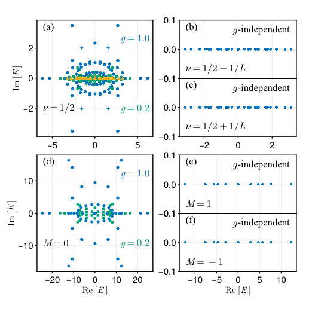
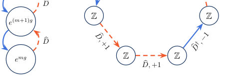
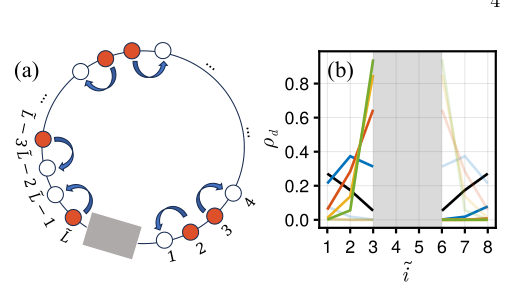
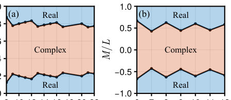
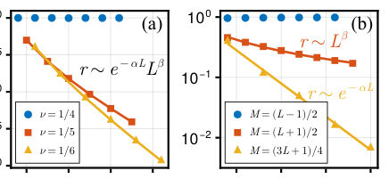
Summary. This paper demonstrates that the presence of complex energy spectra in fragmented non-Hermitian systems is determined by the discrete holonomy of the Hilbert space. It shows that complex spectra are restricted to highly symmetric sectors, while other sectors exhibit real spectra due to a trivial holonomy that allows mapping to a Hermitian limit. This discovery links many-body fragmentation, non-reciprocity, and emergent boundary effects through a unified geometric principle.
Why it may be interesting. It provides a new topological/geometric perspective (holonomy) on how global quantum numbers and Hilbert space fragmentation control the transition between real and complex spectra in non-Hermitian many-body dynamics.
Main problem. The paper investigates the origin of spectral complexity (real vs. complex energy spectra) in fragmented non-Hermitian many-body systems and seeks a geometric principle to explain it.
Main result. The authors identify Hilbert-space holonomy as the governing principle, where non-trivial holonomy in the Krylov graph leads to complex spectra, while trivial holonomy allows a similarity transformation to a Hermitian limit, restoring real spectra.
Method. The study uses a geometric approach involving a Krylov graph (mapping Fock states to vertices and operators to edges), similarity transformations, and height-function arguments to analyze the topology of the Hilbert space.
Model / system. The study focuses on fragmented non-Hermitian many-body systems on 1D lattices with periodic boundary conditions, specifically including an interacting fermionic model and a spin-1 chain model with non-reciprocal hopping/interactions.
Key observables. Spectral reality (complex vs. real eigenvalues), spectral winding, non-Hermitian skin effect (NHSE), and fragmentation ratio.
Important parameters / regimes. Non-reciprocity parameter (g), filling factor (nu) for fermions, and magnetization (M) for spin chains.
Assumptions / limitations. The analysis assumes the system is in a fragmented regime where the Hilbert space is partitioned into isolated Krylov sectors.
Figures summary. Figure 2 shows the schematic of discrete holonomy and the gauge potential interpretation; Figure 3 illustrates emergent open boundaries and the skin localization of dipoles; Figure 5 shows the scaling of the fragmentation ratio.
Paper structure. The paper introduces the problem of spectral complexity, defines the models and the Krylov graph framework, presents the holonomy criterion for spectral reality, analyzes filling-sensitive effects in minimal models, extends the results to longer-range models, and concludes with implications for emergent boundaries and future directions.
We show that Hilbert-space holonomy provides a geometric organizing principle for spectral reality in fragmented non-Hermitian many-body systems, complementary to conventional symmetry protection. In two minimal fragmented models, complex spectra can arise only within the most symmetric sectors: half filling in the fermion model and zero magnetization in the spin chain. Adding or removing a single particle, or flipping a single spin, renders the spectra entirely real despite unchanged periodic boundary conditions, reminiscent of boundary-condition sensitivity in systems with a non-Hermitian skin effect. We explain this by viewing nonreciprocal hopping amplitudes as a discrete gauge field on the Krylov graph: trivial holonomy permits a diagonal similarity transformation to the Hermitian limit, whereas nontrivial holonomy obstructs it and allows complex spectra. In certain regimes, trivial holonomy admits an emergent-boundary interpretation, and longer-range models exhibit finite real and complex regions governed by the same criterion.
Authors: Gianluca De Santis, Jia Boon Chin, Srihari Sivasankaran, Konstantin Kravtsov, Chin Chean Lim, Aitor Villar, Robert Bedington, Sana Amairi-Pyka, Eleni Diamanti, Alexander Ling, James A. Grieve
Type: experiment · Category: quantum information and computing · PDF: https://arxiv.org/pdf/2605.19689v1
Analysis basis: full PDF text, analyzed in chunks
Topic relevance: 🔥 QC/QI experiment 4/5 · 🔥 quantum optics experiment 4/5
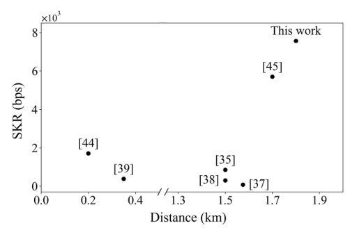
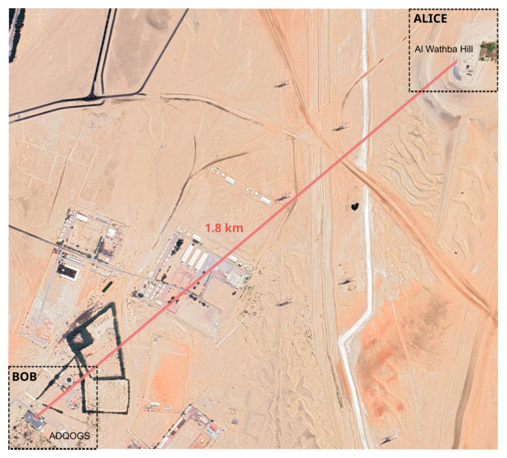
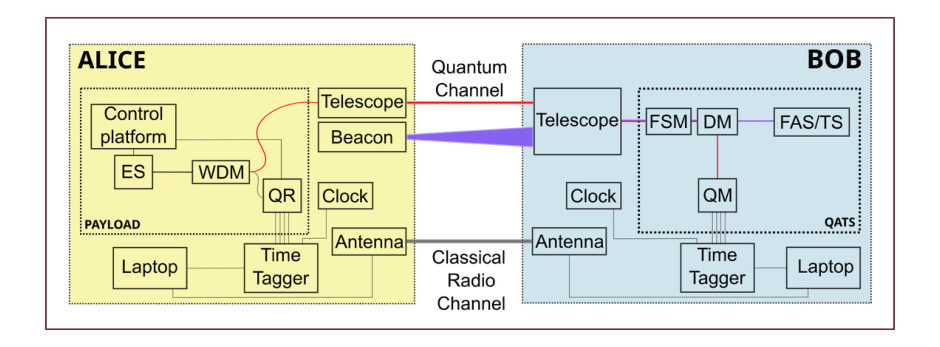
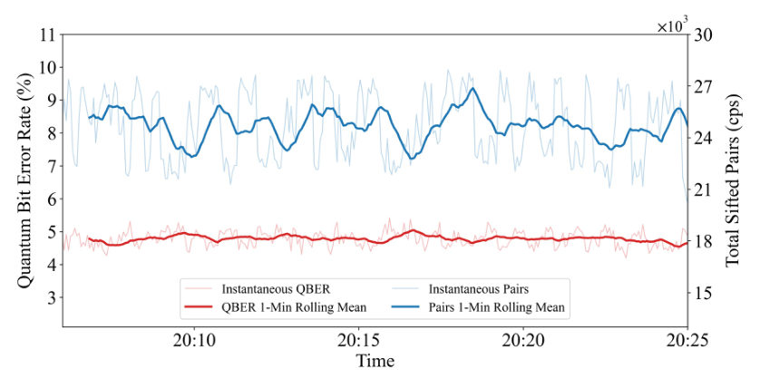
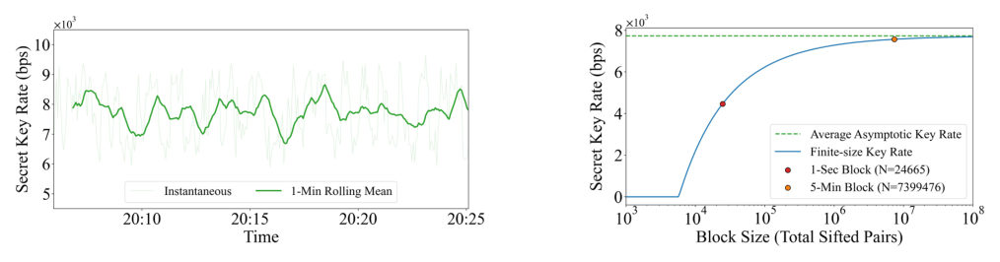
Summary. The researchers successfully tested a space-qualified quantum payload over a 1.8 km terrestrial link to prepare for the SpeQtre satellite mission. They achieved a high secret key rate of 7.56 kbps, proving that the ground and space segments are operationally compatible. The study also provides a realistic prediction of how these links will perform during actual satellite passes from Low Earth Orbit.
Why it may be interesting. This work is highly relevant to quantum optics and quantum networks as it demonstrates the practical implementation of entanglement distribution and the technical challenges of maintaining high-fidelity quantum states through atmospheric turbulence and high-loss channels.
Main problem. Validating the terrestrial readiness of space-qualified hardware and ground station architectures for future satellite-based quantum key distribution (QKD) missions.
Main result. Demonstrated a high-rate (7.56 kbps) free-space QKD link using an engineering model of the SpeQtre satellite payload, establishing a performance baseline for future LEO satellite missions.
Method. Implemented the BBM92 protocol using polarization-entangled photon pairs over a 1.8 km horizontal free-space link, utilizing finite-key analysis and TLE-based simulations to extrapolate performance to LEO scenarios.
Model / system. A 1.8 km horizontal free-space link in Abu Dhabi using a space-qualified engineering model of the SpeQtre satellite payload (transmitter) and the Abu Dhabi Quantum Optical Ground Station (receiver) featuring an 80 cm telescope.
Key observables. Secret Key Rate (SKR), Quantum Bit Error Rate (QBER), sifted coincidence rate, and photon counts per channel.
Important parameters / regimes. SKR of 7.56 kbps, QBER of 4.78%, security parameter epsilon = 4e-16, and extrapolated LEO SKR of 4.3 bps.
Assumptions / limitations. Assumes standard BBM92 security framework, a 6 dB loss margin for atmospheric/tracking errors in LEO, and a fixed error correction efficiency of f = 1.2.
Figures summary. Figure 1 compares SKR vs. distance for various free-space systems; Figure 2 shows the physical link location; Figure 3 presents the experimental setup schematic; Figure 4 shows the temporal evolution of QBER and pair rates; a plot illustrates finite-key vs. asymptotic limits.
Paper structure. Introduction to space-based QKD challenges, description of the experimental setup and hardware, detailed methodology for QKD protocol and finite-key analysis, presentation of terrestrial experimental results, and LEO mission performance extrapolation via simulations.
Realizing a global quantum internet relies on the deployment of robust satellite-based entanglement distribution links. While pioneering demonstrations have established the feasibility of such links, the transition to operational infrastructure demands the validation of robust, integrated space-to-ground architectures. Here, we report on a free-space Quantum Key Distribution experiment conducted over a 1.8 km free-space link using an engineering model of the quantum payload onboard the SpeQtre satellite and the Abu Dhabi Quantum Optical Ground Station. By implementing a BBM92 protocol with polarization-entangled photons, a secret key rate of approximately 7.56 kbps with a mean quantum bit error rate of 4.78%+-0.24% was produced. The deployed system featured spectral and spatial filtering approaches identical to those in the space segment, thus validating the link budget and background rejection capabilities under realistic atmospheric conditions. These results confirm the operational compatibility between the ground and space segments, establishing a critical performance baseline for the SpeQtre mission and future space-based, large-scale quantum networks.
Authors: Prabhakar, Giuseppe De Tomasi, Soumya Bera
Type: theory · Category: strongly correlated electrons · PDF: https://arxiv.org/pdf/2605.19421v1
Analysis basis: full PDF text, analyzed in chunks
Topic relevance: 🔥 scars & prethermalization 4/5 · entanglement & information structure 3/5
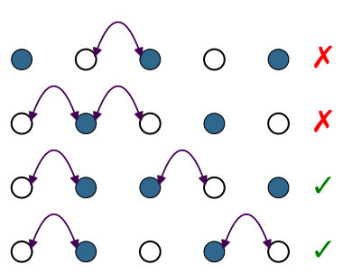
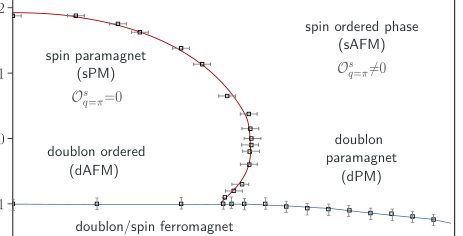
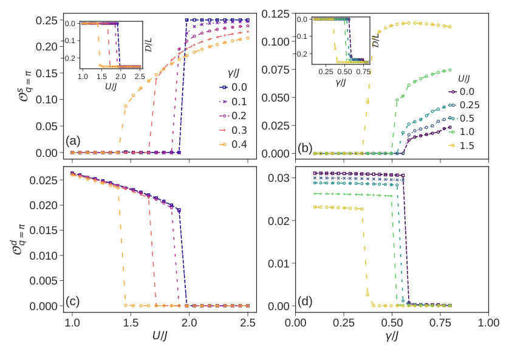
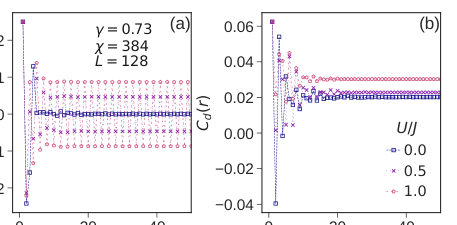
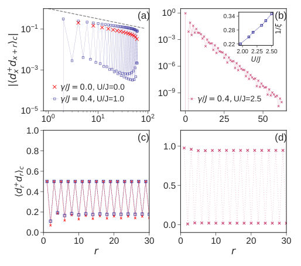
Summary. This paper explores the phase diagram of a 1D spin chain where dipole conservation prevents isolated spin movement. It reveals that these constraints can stabilize unique phases, such as a state where ordering occurs in spin pairs (doublons) rather than individual spins.
Why it may be interesting. The paper explores how fractonic constraints (dipole conservation) lead to unconventional magnetic order and Hilbert space fragmentation, which is highly relevant to the study of many-body dynamics and constrained quantum systems.
Main problem. The study investigates the competition between dipole conservation, which imposes strong dynamical constraints, and Ising-type interactions that favor magnetic ordering in a 1D spin chain.
Main result. The authors discover an antiferromagnetic dipole-ordered ground state and identify phase transitions between paramagnetic, antiferromagnetic, and ferromagnetic phases, including a regime where spin and doublon ferromagnetism coexist.
Method. The study employs Density Matrix Renormalization Group (DMRG) and large-scale exact diagonalization, supplemented by analytical mapping to effective XXZ models and Bethe ansatz comparisons.
Model / system. A one-dimensional spin-1/2 chain featuring a Hamiltonian with pair-flip exchange (J), long-range exchange (gamma), and nearest-neighbor Ising interactions (U), subject to conserved total magnetization and dipole moment.
Key observables. Static spin and doublon structure factors, two-spin and four-spin correlation functions, entanglement entropy (and central charge extraction), and dynamical spin susceptibility.
Important parameters / regimes. Interaction strength (U/J), frustration/long-range parameter (gamma/J), and the mapping to the XXZ anisotropy parameter (Delta).
Assumptions / limitations. The mapping to the effective XXZ model is assumed to be valid only for certain parameter ranges (specifically breaking down for U/J approximately less than -0.98).
Figures summary. Figure 1 shows spin exchange processes; Figure 2 presents the finite-size phase diagram; Figure 6 shows structure factors as functions of gamma and U/J; Figure 7 displays entanglement entropy; Figure 8 illustrates the entanglement spectrum.
Paper structure. The paper introduces the dipole-conserving model, describes the Hamiltonian and symmetries, presents the numerical methods, details the phase diagram discovery through various order parameters, analyzes the mapping to XXZ models, and concludes with discussion on limitations and future work.
This work investigates the competition between dipole conservation, which imposes strong dynamical constraints and prevents the propagation of isolated spin excitations, and Ising-type interactions that favor ordering. Specifically, we explore the ground state phase diagram of a one-dimensional spin chain in the presence of both fractonic constraints and interactions. Despite the kinetic constraints, the system stabilizes an antiferromagnetic dipole-ordered ground state, where the ordering occurs at the level of spin pairs rather than individual spins. At a large Ising interaction strength, the model undergoes a phase transition from a dipole-ordered phase to a spin antiferromagnetic phase. In contrast, for ferromagnetic Ising interactions, the model exhibits both antiferromagnetic and ferromagnetic dipole ordered phases. At sufficiently large negative interaction strength, the dipole ordered phase transitions to a ferromagnetic phase with conventional spin ferromagnetic order. To characterize these distinct phases, we employ density matrix renormalization group (DMRG) simulations alongside large-scale diagonalization. We analyze appropriate order parameters, along with features of the entanglement spectrum and dynamical spectral functions. In limiting cases, the observed transitions can be understood by mapping the dipole conserving model onto effective XXZ models in a restricted Hilbert space of composite spins.
Authors: Songbo Xie, Jiheng Duan, Sabre Kais
Type: theory · Category: quantum information and computing · PDF: https://arxiv.org/pdf/2605.19114v1
Analysis basis: full PDF text, analyzed in chunks
Topic relevance: 🔥 non-equilibrium dynamics 4/5 · methods for driven-dissipative 2/5
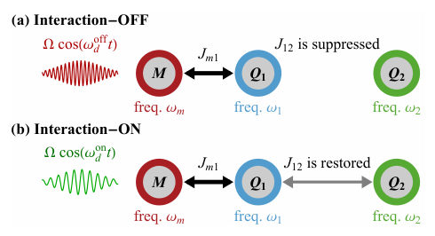
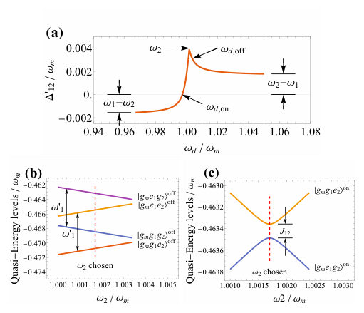
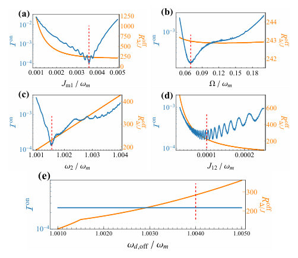
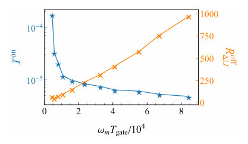
Summary. This paper proposes a new method to control qubit interactions using only microwave drives by 'freezing' an auxiliary qubit into a dressed state. This allows for switching between an interaction-on regime for iSWAP gates and an interaction-off regime for idling, without needing to tune qubit frequencies. The method is particularly promising for high-fidelity operations in fixed-frequency superconducting architectures.
Why it may be interesting. It presents a novel way to use auxiliary degrees of freedom and periodic driving to reshape effective Hamiltonians, which is highly relevant for controlling many-body dynamics and engineering specific interactions in driven open quantum systems.
Main problem. The tension between needing strong native interactions for fast entangling gates and the need for simple, noise-free control that avoids frequency tuning or tunable couplers.
Main result. The introduction of a 'drive-only' interaction engineering paradigm using dynamical freezing that enables high-fidelity iSWAP gates and strong interaction suppression in fixed-frequency architectures.
Method. The authors use Floquet analysis, Rotating Wave Approximation (RWA) in the dressed eigenbasis, and ab initio lab-frame simulations to optimize gate parameters.
Model / system. A three-qubit architecture consisting of two target qubits (Q1, Q2) and one auxiliary modulator (M), where M is coupled to Q1 and Q1 is coupled to Q2 via a fixed exchange interaction, all subject to a transverse microwave drive.
Key observables. Average gate fidelity (Fin), interaction-on infidelity (Ion), and the detuning-to-coupling ratio (R_Delta/J) in the interaction-off regime.
Important parameters / regimes. Drive frequency (omega_d), drive amplitude (Omega), coupling strengths (J_m1, J_12), and qubit frequencies (omega_m, omega_1, omega_2).
Assumptions / limitations. The validity of the Rotating Wave Approximation (RWA) and the assumption that the modulator can be effectively 'frozen' in a dressed eigenstate.
Figures summary. Figure 4 illustrates the scaling of performance with gate time, showing that increasing gate time decreases infidelity and increases the interaction suppression ratio.
Paper structure. The paper introduces the problem of control tension, proposes the dynamical freezing mechanism, details the three-qubit model and Hamiltonian, performs parameter optimization via scans, presents performance results through lab-frame simulations, and concludes with the scalability of the protocol.
Freezing is usually used to suppress unwanted dynamics, but it can also be used to engineer interactions. We introduce freezing-induced interaction engineering, a drive-only control paradigm in which dynamically freezing an auxiliary subsystem reshapes the effective Hamiltonian of the remaining degrees of freedom. As a concrete realization, we consider a three-qubit architecture where a driven modulator $M$ is coupled to one of two target qubits, $Q_1$, while $Q_1$ and $Q_2$ retain a fixed native exchange-type interaction. When $M$ is frozen in a dressed eigenstate, its projection renormalizes the local Hamiltonian of $Q_1$. This makes the dressed-frame detuning between $Q_1$ and $Q_2$ controllable by the drive frequency. The native interaction can then be switched between two regimes: an interaction-off regime with large dressed-frame detuning, and an interaction-on regime with resonant exchange. In the interaction-on regime, the protocol realizes an iSWAP gate using the native $Q_1Q_2$ coupling. Full lab-frame simulations show high-fidelity iSWAP dynamics and strong interaction suppression in the interaction-off regime. By combining native-coupling gate speed with drive-only operational simplicity, freezing-induced interaction engineering provides a route toward fast, drive-controlled entangling gates in fixed-frequency quantum architectures.
Authors: Abbas Edalat
Type: theory · Category: quantum information and computing · PDF: https://arxiv.org/pdf/2605.19706v1
Analysis basis: full PDF text, analyzed in chunks
Topic relevance: 🔥 quantum measurements 4/5 · entanglement & information structure 2/5
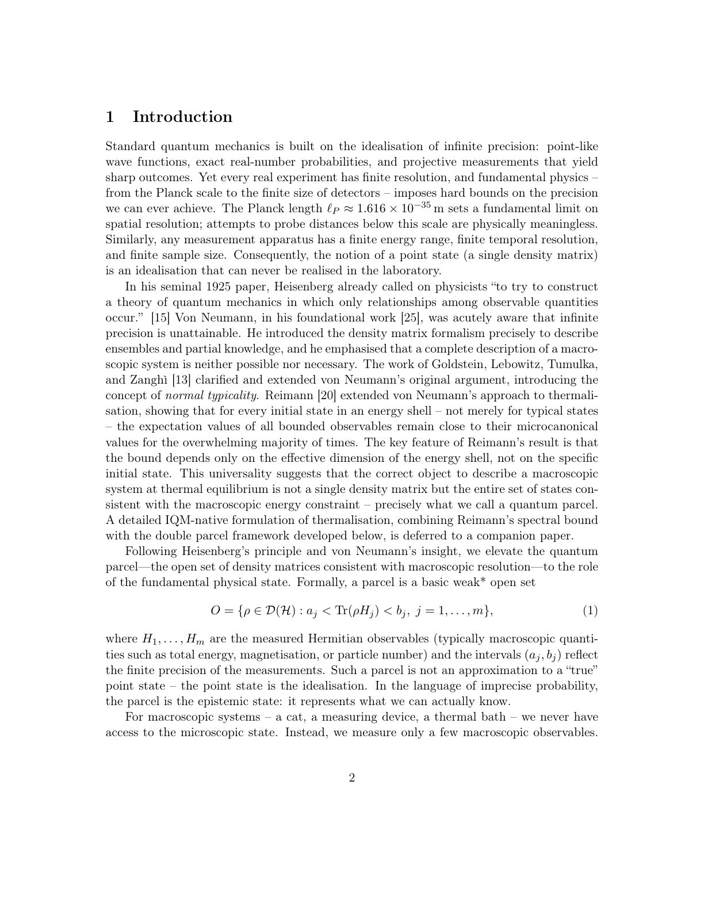
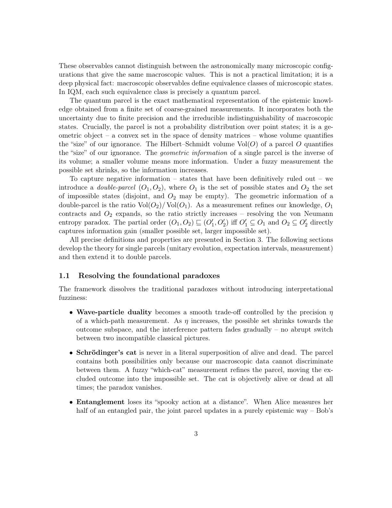
Summary. This paper proposes a new formulation of quantum mechanics called Interval Quantum Mechanics, where quantum states are represented as sets of possible density matrices rather than exact points. By accounting for finite measurement precision, the framework eliminates paradoxes like Schrödinger's cat and entanglement-based non-locality, reinterpreting them as epistemic updates. It also offers a scalable computational approach for tracking uncertainty in near-term quantum devices.
Why it may be interesting. It provides a rigorous, resource-aware framework for precision tracking and error analysis in NISQ-era hardware, treating finite measurement resolution as a fundamental feature rather than noise.
Main problem. Standard quantum mechanics relies on unphysical infinite-precision idealizations (point states and sharp measurements) that lead to foundational paradoxes like Schrödinger's cat and entanglement-based non-locality.
Main result. The paper introduces Interval Quantum Mechanics (IQM), a framework where states are 'quantum parcels' (open sets of density matrices), which resolves quantum paradoxes by treating measurement as an epistemic geometric update and provides a monotonic measure of information gain.
Method. The author utilizes domain theory, geometric logic, and convex geometry to define states as weak* open sets (parcels) and uses Hilbert-Schmidt volume to quantify information gain and measurement-induced volume contraction.
Model / system. The model, Interval Quantum Mechanics (IQM), replaces point-like density matrices with 'quantum parcels' (single-parcels and double-parcels) defined by intervals of expectation values for a finite set of observables.
Key observables. Expectation intervals of Hermitian operators, CHSH expectation intervals, and fuzzy POVMs.
Important parameters / regimes. Measurement precision/resolution (eta), which interpolates between wave-like and particle-like behavior, and the Hilbert-Schmidt volume of the parcels.
Assumptions / limitations. Assumes a separable complex Hilbert space, the existence of a uniform lower bound on measurement probabilities, and that macroscopic observables define equivalence classes of microscopic states.
Figures summary. The notes mention a table comparing interpretations of QM (Copenhagen, Many-Worlds, QBism, and IQM) based on the nature of physical events and quantum states.
Paper structure. The paper introduces the problem of infinite-precision idealizations, develops the mathematical framework of IQM (parcels and double-parcels), proves properties of unitary evolution and measurement updates, demonstrates the resolution of foundational paradoxes, and discusses computational utility for NISQ hardware.
Standard quantum mechanics is an idealisation based on infinite-precision objects: point states, exact probabilities, and sharp measurements. Yet every real experiment has finite resolution, and for macroscopic systems we never have access to the microscopic state. Following Heisenberg's call for a theory built only on observable quantities, and von Neumann's insight that a complete description of a macroscopic system is neither possible nor necessary, we elevate the macroscopic state to a fundamental concept. We introduce Interval Quantum Mechanics (IQM), in which the state of a quantum system is never a point but a quantum parcel - a basic weak-star open set of density matrices defined by finitely many open expectation intervals. Such a parcel is the exact mathematical representation of the set of all microscopic states that are compatible with the measured values of a finite set of macroscopic observables. We show that unitary evolution lifts to a deterministic flow on parcels, and that a finite-precision (fuzzy) measurement process is represented by a volume-contracting update that refines the initial parcel into a more constrained open set, strictly increasing the geometric information defined as the Hilbert-Schmidt volume of the parcel. By introducing a second impossible set, we obtain a double-parcel whose information increases monotonically - resolving the von Neumann entropy paradox. The framework eliminates foundational puzzles without additional interpretational assumptions: wave-particle duality becomes a smooth trade-off; Schroedinger's cat is never in a literal superposition; and the spooky action at a distance of entanglement disappears, replaced by a purely epistemic geometric update. All empirical predictions of standard quantum mechanics are recovered exactly in the infinite-precision limit, which is never physically attained.
Authors: Raul Arias
Type: theory · Category: statistical mechanics · PDF: https://arxiv.org/pdf/2605.19725v1
Analysis basis: full PDF text, analyzed in chunks
Topic relevance: 🔥 entanglement & information structure 4/5 · non-equilibrium dynamics 2/5
Summary. The paper demonstrates that a Page-like curve for the Capacity of Entanglement arises naturally from energy-sharing fluctuations in a microcanonical ensemble. By treating the system through thermodynamic response data, the authors show that the peak in entanglement capacity is a consequence of the microcanonical constraint rather than specific gravitational dynamics. This provides a universal statistical-mechanical mechanism for observing single-hump entanglement curves.
Why it may be interesting. It provides a purely thermodynamic, non-dynamical explanation for Page-like curves, which is relevant for understanding how entanglement fluctuations behave in many-body systems and finite reservoirs.
Main problem. Identifying the simplest statistical-mechanical mechanism that produces a Page-like (single-hump) curve for the Capacity of Entanglement (CoE) in a bipartite system.
Main result. The CoE follows an effective heat capacity formula determined by energy-sharing fluctuations, which naturally produces a Page-like peak in the microcanonical ensemble as the radiation sector grows.
Method. The study uses microcanonical typicality, the Laplace method for saddle-point analysis, and a thermodynamic expansion of the modular Hamiltonian around equilibrium energy splitting.
Model / system. A bipartite system in a microcanonical ensemble with a fixed total energy, specifically a toy model consisting of a Schwarzian 'black-hole' sector coupled to a 2D CFT radiation sector.
Key observables. Capacity of Entanglement (CoE), entropy, and thermal heat capacities.
Important parameters / regimes. The effective size of the radiation sector (L), the dimensionless variable x (proportional to L), and the energy-sharing fluctuations.
Assumptions / limitations. The Hamiltonian is assumed to be effectively additive, and the results are derived within the thermodynamic regime using a leading-order approximation.
Figures summary. Figure 1 displays the dimensionless microcanonical Page-like curve for the Capacity of Entanglement.
Paper structure. The paper introduces the problem of CoE behavior, develops a universal formula based on energy-sharing fluctuations, applies this to a Schwarzian/CFT toy model, and compares microcanonical results to the canonical ensemble.
We study the capacity of entanglement in the microcanonical ensemble for an effectively additive bipartite system. Using typicality and the block structure of the microcanonical reduced state, we show that in the thermodynamic regime the capacity is controlled by energy-sharing fluctuations and can be expressed purely in terms of standard thermal response data of the subsystems. As an illustration, we apply the result to a toy model consisting of a Schwarzian ``black-hole'' sector coupled to a two-dimensional CFT radiation sector. At fixed total energy, the growth of the radiation sector forces the common temperature to decrease, producing a smooth Page-like single-hump curve for the capacity. The construction is meant as a thermodynamic microcanonical mechanism for Page-like capacity curves, rather than as a complete dynamical evaporation calculation.
Authors: Tamila Kuanysheva, Jonathan Andrade-Plascencia, Jayakrushna Sahoo, Brian Kendrick, Dmitri Babikov
Type: both · Category: quantum information and computing · PDF: https://arxiv.org/pdf/2605.20078v1
Analysis basis: full PDF text, analyzed in chunks
Topic relevance: 🔥 QC/QI experiment 4/5 · non-equilibrium dynamics 2/5
Summary. This paper investigates an efficient way to simulate 1D quantum wave packet dynamics on NISQ hardware by optimizing the representation of potential energy operators. By comparing IBM and IonQ platforms, the authors demonstrate that trapped-ion systems currently handle larger qubit counts with higher fidelity for these specific dynamical simulations.
Why it may be interesting. It provides a direct benchmark of how current NISQ architectures handle the time-dependent Schrodinger equation, which is critical for anyone developing algorithms for many-body dynamics or molecular simulations.
Main problem. Evaluating the performance and limitations of NISQ hardware for simulating 1D quantum wave packet dynamics, specifically addressing the challenges of large circuit depth and inefficient Hamiltonian decomposition.
Main result. The study finds that while 2- and 3-qubit simulations are qualitatively accurate across platforms, larger qubit counts lead to significant fidelity decay in superconducting hardware, whereas trapped-ion (IonQ) hardware maintains better agreement with benchmarks.
Method. A split-operator approach using a first-order Trotter decomposition, where the kinetic energy is implemented via Quantum Fourier Transform (QFT) and the potential energy is expressed as a sum of commuting Pauli-Z strings to reduce scaling from O(4^n) to O(2^n).
Model / system. One-dimensional quantum wave packet dynamics involving free particle motion, tunneling through a potential barrier, and harmonic oscillator oscillations, implemented on 2 to 5 qubits using IBM (superconducting) and IonQ (trapped-ion) hardware.
Key observables. Wave packet width (sigma), tunneling probability (p), and the expectation value of position (r).
Important parameters / regimes. Qubit counts from 2 to 5 (spatial grids of 4 to 32 points), time evolution over eight time-steps, and atomic units (hbar = 1).
Assumptions / limitations. The use of a first-order Trotter decomposition introduces an error proportional to O(delta t^2), and the study is limited to one-dimensional dynamics.
Figures summary. Figure 1 compares circuit depth scaling; Figure 2 shows time evolution of a free particle; Figure 3 illustrates quantum tunneling; Figure 4 displays the time evolution of a harmonic oscillator across different qubit counts.
Paper structure. The paper introduces the problem of NISQ simulation efficiency, proposes a specialized Hamiltonian decomposition method, details the implementation of kinetic and potential operators, presents benchmarking results across different hardware platforms (IBM vs IonQ), and discusses the limitations of current hardware scaling.
Digital quantum simulation offers a promising route for studying quantum dynamics, but efficient operator representations and circuit depth remain key challenges for near-term hardware. We investigate one-dimensional wave packet dynamics using a grid-based encoding of the wave function onto qubit registers. Time evolution is implemented via split-operator approach, with kinetic energy operator applied using Quantum Fourier Transform (QFT) with polynomial scaling and potential energy operator expressed through commuting Pauli-Z gates, improving accuracy and enabling incorporation of arbitrary discretized potentials. While the full Pauli decomposition of Hamiltonian scales exponentially as O(4^n ), the present approach reduces the operator scaling to O(2^n) for n qubits. We benchmark this approach on classical simulators and quantum hardware (IBM Quantum and IonQ) for two- to five-qubit implementations. For two- and three-qubit cases, all platforms qualitatively reproduce the benchmarked dynamics; at larger qubit counts, the IBM results deviate more strongly, whereas IonQ remains closer to the benchmark.
Authors: Michele N. Notarnicola
Type: both · Category: quantum information and computing · PDF: https://arxiv.org/pdf/2605.19602v1
Analysis basis: full PDF text, analyzed in chunks
Topic relevance: 🔥 quantum measurements 4/5 · Keldysh / 2PI / non-Gaussian methods 2/5
Summary. This paper presents advancements in continuous-variable quantum communications, focusing on new receiver architectures for better state discrimination and novel CVQKD protocols. It introduces methods to mitigate channel loss using optical amplifiers and proposes a non-Gaussian approach to improve key generation rates. The research bridges the gap between fundamental quantum theory and practical, fiber-compatible quantum technologies.
Why it may be interesting. This work is highly relevant to quantum optics and open quantum systems researchers as it explores the interface of non-Gaussian measurements, quantum amplification, and the practical implementation of quantum-enhanced receivers in noisy, lossy environments.
Main problem. The research addresses the enhancement of quantum communication performance and security, specifically focusing on improving quantum state discrimination and mitigating channel losses in continuous-variable quantum key distribution (CVQKD).
Main result. The work develops new hybrid receivers for BPSK discrimination that achieve quantum advantage and proposes a first-of-its-kind non-Gaussian CVQKD scheme using optimized state-discrimination receivers to enhance key generation rates.
Method. The author employs quantum decision theory, designing hybrid near-optimum and feed-forward receivers, and utilizes probabilistic shaping of discrete modulation (QAM) alongside noiseless linear amplification (NLA) for loss mitigation.
Model / system. The physical platform consists of continuous-variable (CV) systems using coherent-state encoding and quadrature measurements, compatible with standard fiber-optical communication technologies.
Key observables. Key generation rate (KGR), decision error probability, quadrature measurements, and photon-number resolving detection.
Important parameters / regimes. Channel loss, transmission distance, amplifier gain, phase noise, and quantum efficiency.
Assumptions / limitations. The security analysis relies on the optimality of Gaussian attacks theorem and considers both trusted-device and wiretap channel scenarios.
Paper structure. The paper progresses from the fundamental mathematical framework of open quantum systems to specific applications in quantum state discrimination (QSD) and then to advanced protocols and loss mitigation strategies in CVQKD.
Nowadays, quantum communications provide a vast field of research in rapid expansion, with a huge potential impact on the future developments of quantum technologies. In particular, continuous variable systems, employing coherent-state encoding and quadrature measurements, represent a suitable platform, due to their compatibility with both the modulation and detection systems currently employed in standard fiber-optical communications. In this work, we address some relevant aspects of the field, and provide innovative results being also experimentally oriented. In particular, we focus on two relevant paradigms: quantum decision theory and continuous variable quantum key distribution (CVQKD). In the former case, we address the problem of coherent-state discrimination and design new hybrid receivers for binary phase-shift keying discrimination, obtaining a quantum advantage over conventional detection schemes, being also robust against typical experimental imperfections. In the latter scenario, we proceed in two different directions. On the one hand, we design new CVQKD protocols employing discrete modulation of coherent states, being a feasible solution compatible with the state of the art in optical communications technologies. On the other hand, we address the more fundamental problem of performing channel losses mitigation to enhance existing protocols, and investigate the role of optical amplifiers for the task. Finally, we make a first step towards a fully non-Gaussian CVQKD scheme by proposing, for the first time, the adoption of an optimized state-discrimination receiver, commonly adopted for quantum decision theory, within the context of CVQKD, obtaining a genuine quantum enhancement over conventional protocols.
Authors: Yonggang Cheng, Lin Chen
Type: theory · Category: quantum information and computing · PDF: https://arxiv.org/pdf/2605.19530v1
Analysis basis: full PDF text, analyzed in chunks
Topic relevance: 🔥 entanglement & information structure 4/5
Summary. This paper provides a complete classification and construction method for three-qubit entangled states of rank four that possess a positive partial transpose. It distinguishes between states that can be built from unextendible product bases and those that cannot, using a Lorentz-like invariant as a primary diagnostic tool.
Why it may be interesting. This work advances the fundamental understanding of multipartite entanglement and the mathematical structure of bound entanglement, which is critical for developing robust quantum information protocols.
Main problem. The classification and construction of all three-qubit positive-partial-transpose entangled states (PPTES) of rank four under SLOCC-equivalence.
Main result. The authors classify rank-four PPTES into two types based on a Lorentz invariant (Type I with non-zero invariant, Type II with zero invariant) and provide explicit expressions and construction methods for both.
Method. The study uses the Lorentz invariant, SLOCC-equivalence, and Unextendible Product Bases (UPB) to categorize states, alongside algebraic techniques like characteristic sets and matrix analysis.
Model / system. A three-qubit quantum system focusing on rank-four density matrices that satisfy the PPT criterion.
Key observables. Lorentz invariant (I_rho), characteristic set (T_rho), and eigenvalues of the partial transpose.
Important parameters / regimes. Rank (specifically rank four), Lorentz invariant (I_rho), and a single complex parameter (t) for Type II states.
Assumptions / limitations. The analysis of Type I states assumes that the product vectors in the kernel are in general position.
Figures summary. Figure 1 is a flowchart illustrating the classification procedure for three-qubit rank-four PPTES based on the Lorentz invariant and kernel properties.
Paper structure. The paper begins with a classification framework based on the Lorentz invariant, moves to the construction of Type I states via UPB, provides explicit SLOCC-equivalent expressions for Type II states, and concludes with an analysis of the range of Lorentz invariants for n-qubit states.
Multiqubit positive-partial-transpose (PPT) entangled states play an important role in quantum information theory. We characterize such states of minimum rank in three-qubit system, namely rank four. Depending on whether the Lorentz invariant is zero, we classify such states into two types. The PPT entangled states constructed by unextendible product bases (UPB) have nonzero invariants, which belong to type I. We provide a method to effectively determine whether a state can be constructed from UPB. For states with zero invariant, which belong to type II, we provide an explicit expression up to equivalence of stochastic local operations and classical communications (SLOCC). It turns out that we can represent them with only one complex parameter. We further study SLOCC-equivalence relation within the expression. We also investigate the Lorentz invariants of multiqubit states with rank less than three and analyze their range.
Authors: Almudena Carrera Vazquez, Daniel J. Egger, Stefan Woerner
Type: both · Category: quantum information and computing · PDF: https://arxiv.org/pdf/2605.18985v1
Analysis basis: full PDF text, analyzed in chunks
Topic relevance: 🔥 QC/QI experiment 4/5
Summary. This paper presents a method to simplify complex quantum circuits by decomposing them into a linear combination of much simpler, hardware-friendly gates using Fourier transforms. By trading increased sampling requirements for reduced circuit depth and connectivity, the approach enables more practical execution of quantum optimization algorithms on near-term hardware.
Why it may be interesting. not directly relevant
Main problem. The difficulty of implementing complex, high-connectivity quantum circuits (like those in QAOA) on near-term NISQ hardware due to high gate depth and connectivity requirements.
Main result. The development of an ancilla-free, Fourier-based Linear Combination of Unitaries (LCU) framework that replaces complex interactions with simpler single-qubit gate layers, trading circuit complexity for a polynomial sampling overhead.
Method. Using Discrete Fourier Transforms for diagonal unitaries and continuous Fourier expansion over the SU(2) group for non-diagonal permutation-invariant unitaries to decompose target unitaries into simpler components.
Model / system. The framework is applied to quantum optimization problems, specifically the densest k-subgraph problem, using Hamiltonians such as the XY-mixer and quadratic penalty terms on 12-qubit simulations and 106-qubit IBM superconducting hardware.
Key observables. Expectation values of the cost Hamiltonian, Conditional Value-at-Risk (CVaR), probability of sampling feasible solutions, and probability of sampling optimal solutions.
Important parameters / regimes. Sampling overhead (Gamma), risk level (eta), penalty factor (lambda), and the number of qubits (n).
Assumptions / limitations. The method assumes that in optimization, one only needs to sample high-quality bitstrings rather than the full output distribution; also assumes certain covariance matrices are sufficiently sparse for index tracking.
Figures summary. Figure 1 shows the LCU circuit implementation; Figure 2 illustrates the 12-node graph problem; Figure 3 shows the penalty-based LCU circuit; Figure 4 shows objective value distributions; Figure 5 shows the XY-mixer LCU circuit; Figure 6 shows distribution comparisons; Figure 7 shows cumulative distribution functions; Figure 8 visualizes the 106-node problem graph.
Paper structure. The paper introduces the ancilla-free LCU framework, develops the Fourier-based construction for diagonal and non-diagonal unitaries, establishes theoretical bounds on sampling cost, applies the method to QAOA for optimization (penalty and mixer approaches), and validates the approach via 12-qubit simulations and 106-qubit hardware experiments.
We investigate ancilla-free linear combination of unitaries (LCU) as a framework for approximating complex quantum circuits. This is particularly effective for quantum optimization algorithms, where candidate solutions can be evaluated classically and the task is to sample high-quality bitstrings rather than reproduce the full output distribution. We show that Fourier-based LCU constructions efficiently decompose broad classes of diagonal and non-diagonal unitaries, replacing highly connected qubit interactions with single-qubit gate layers or significantly simpler structures at the cost of a polynomial sampling overhead. Applied to algorithms such as QAOA, this yields efficient, hardware-friendly decompositions of, for instance, cardinality-constraint penalties and the fully connected XY-mixer, while maintaining rigorous performance guarantees compared to fully coherent implementations. Furthermore, we establish a formal connection between Fourier-based quantum penalties and Lagrangian relaxation, offering a unified perspective on constraint handling. We validate our approach using exact statevector simulations of 12-qubit circuits and large-scale experiments on 106 superconducting qubits. Our results illustrate how approximate sampling via an LCU systematically trades circuit complexity for sampling overhead, extending the practical reach of near-term quantum optimization.
Authors: S. A. Norrell, Y. Shen, M. Saffman, M. Otten
Type: theory · Category: other · PDF: https://arxiv.org/pdf/2605.19245v1
Analysis basis: full PDF text, analyzed in chunks
Topic relevance: 🔥 Rydberg arrays 4/5
Summary. This paper demonstrates that accounting for multiple interaction channels near Förster resonances significantly changes the predicted fidelity limits for neutral-atom entangling gates. By using a two-eigenstate model, the authors show that a new gate protocol can surpass previous fidelity bounds by 40% and that including exchange dynamics can improve predicted fidelities by orders of magnitude.
Why it may be interesting. It provides a more accurate theoretical foundation for designing high-fidelity gates in Rydberg platforms by accounting for previously neglected exchange dynamics and multi-state interference effects.
Main problem. Standard one-eigenstate models for neutral-atom entangling gates fail to capture the complex dynamics and fidelity limits introduced by multiple interaction channels near Förster resonances.
Main result. The authors derive a new fundamental fidelity bound of F <= 1 - (pi/2)/(V*tau_R) using a two-eigenstate model, which represents a 40% improvement over previous limits and shows that exchange dynamics can increase predicted fidelable by up to two orders of magnitude.
Method. The study uses an analytical framework to develop a two-eigenstate model, mathematical proofs for fidelity bounds, and numerical optimization of pulse protocols including Adiabatic Rapid Passage (ARP), pi-2pi-pi, and Time-Optimal (TO) gates.
Model / system. The system consists of neutral atoms (e.g., Rubidium or Cesium) in laser tweezers utilizing Rydberg-mediated dipole-dipole interactions near Förster resonances, modeled by a two-eigenstate Hamiltonian involving resonant population exchange between pair states.
Key observables. Gate fidelity (F), Rydberg population (Pr), decay error (epsilon_decay), and phase errors.
Important parameters / regimes. Rydberg lifetime (tau_R), interaction strength (V), Rabi frequency (Omega), and the asymmetry parameter (o1) of the pair potential.
Assumptions / limitations. The proof assumes rank-two coupling to the Rydberg manifold; the largest Schmidt coefficient is assumed to be simple (non-degenerate).
Figures summary. Figure 1 visualizes the atomic setup and pair-state oscillations; Figure 3 compares gate fidelities under one- vs. two-eigenstate models for different protocols; Supplemental Figure 2 shows error scaling relative to resonance asymmetry.
Paper structure. The paper introduces the inadequacy of the one-eigenstate model, develops a two-eigenstate analytical framework, derives new fundamental fidelity bounds, evaluates specific gate protocols (ARP, pi-2pi-pi, TO), and analyzes the impact of imperfect resonances.
Neutral-atom entangling gates are commonly analyzed with a single effective Rydberg-pair state, but near Förster resonances the pair manifold contains resonantly coupled interaction channels that change both the control landscape and the achievable fidelity. We develop a two-eigenstate model for this regime and show that when allowing for coupling to both pair states in the resonance, the gate fidelity is bounded by $\mathcal{F}\leq 1-(π/2)/(Vτ_R)$, for interaction strength $V$ and Rydberg lifetime $τ_R$. We construct a gate protocol that saturates this bound in the large-Rabi-frequency limit, improving the existing fidelity limit by approximately $40\%$. We also evaluate common gate protocols near Förster resonances and find that retaining the exchange dynamics increases predicted fidelities by up to two orders of magnitude over earlier treatments.
Authors: Carlos Flores-Garrigos, Gabriel D. Alvarado Barrios, Qi Zhang, Anton Simen, Enrique Solano
Type: both · Category: quantum information and computing · PDF: https://arxiv.org/pdf/2605.19801v1
Analysis basis: full PDF text, analyzed in chunks
Topic relevance: 🔥 QC/QI experiment 4/5
Summary. This paper introduces a framework to make quantum machine learning practical for industry by using a classical 'surrogate' to mimic quantum feature extraction. By training a classical model on a small subset of data processed by a quantum computer, the system can apply complex quantum-enhanced features to massive datasets at near-zero cost. This effectively moves the heavy lifting of inference from expensive quantum hardware to efficient classical hardware.
Why it may be interesting. not directly relevant
Main problem. The high cost, latency, and queue times of quantum hardware make processing large-scale industrial datasets (millions of samples) via quantum feature extraction economically unfeasible.
Main result. The proposed 'quantum feature surrogate' framework achieves the accuracy of full quantum pipelines while reducing quantum executions by at least 5x, enabling millisecond-scale classical inference.
Method. A hybrid pipeline where a quantum processor generates non-linear features for a small, stratified subsample, and a classical Ridge regression model learns to map the original inputs to these quantum-induced representations.
Model / system. The framework utilizes IBM's 120-qubit Digitized Quantum Feature Extraction (DQFE) processor with a heavy-hex topology, employing a Hamiltonian-based embedding using a k-local spin-glass Hamiltonian and adiabatic dynamics.
Key observables. Single- and higher-body expectation values of Pauli Z operators (langle sigma^z_i rangle and k-body products).
Important parameters / regimes. Subsample size (e.g., 20%), regularization parameter (lambda) for the Ridge surrogate, and the number of qubits (120).
Assumptions / limitations. The effectiveness relies on the smoothness of the observable manifold induced by quantum dynamics, allowing a classical model to successfully interpolate the features.
Figures summary. Figure 1 illustrates the workflow from quantum generation to classical inference; Table 1 summarizes operational advantages; Table 2 compares accuracy across classical, full quantum, and surrogate regimes; Figure 2 shows the processor coupling map.
Paper structure. The paper introduces the industrial bottleneck, presents the quantum feature surrogate framework, details the quantum-classical hybrid methodology, demonstrates performance on satellite and healthcare benchmarks, and discusses operational impacts and limitations.
Quantum computing is no longer a lab curiosity for academic research. Industrial processors exceeding 100 qubits are commercially accessible and, for the first time, can extract information from data in ways that classical algorithms struggle to match. The most direct way to monetize this capability for industrial production today is quantum feature extraction: turning raw business data (images, customer records, molecules, or sensor readings) into richer representations that outperform standard machine learning models. There is one obstacle, however, that stands between today's demonstrations and tomorrow's production systems: every sample of data costs a quantum computing execution. For a company with millions of customers, satellite images, or transactions per month, processing every sample on quantum hardware is simply not viable. This work introduces quantum feature surrogates, a framework developed by Kipu Quantum that breaks this bottleneck. The idea is intuitive though challenging: instead of asking the quantum computer to look at every single sample, we let it look at a small, carefully chosen subsample of the data, whose distribution faithfully represents the full set. A simple classical model, a surrogate, then learns the quantum-induced patterns and applies them to the rest of the dataset at near-zero cost. The quantum processor stops being a per-sample engine and becomes a teacher of representations, while production inference runs entirely on classical hardware.
Authors: Triet Friedhoff, Mihir Metkar, Wade Davis, Vaibhaw Kumar, Alexey Galda
Type: both · Category: quantum information and computing · PDF: https://arxiv.org/pdf/2605.20163v1
Analysis basis: full PDF text, analyzed in chunks
Topic relevance: 🔥 QC/QI experiment 4/5
Summary. This paper introduces a new pipeline for mRNA secondary structure prediction using quantum computing, specifically focusing on efficient variable encoding and a specialized decoder for dense constraints. It demonstrates that trained quantum circuits can be successfully deployed on noisy, large-scale superconducting hardware to find near-optimal biological structures.
Why it may be interesting. not directly relevant
Main problem. Improving mRNA secondary structure prediction by addressing the challenges of decoding continuous expectation values from Pauli Correlation Encoding (PCE) in dense-constraint QUBO problems.
Main result. The proposed Problem-Aware Guided Decoder (PAGD) achieves high near-optimal recovery rates (up to 100%) on simulated sequences and successfully scales to IBM Heron hardware, even recovering exact CPLEX optima for certain large-scale instances.
Method. The authors use Pauli Correlation Encoding (PCE) to compress variables, a QUBO-space sigmoid loss for training, and a new greedy decoding method (PAGD) that combines marginal energy reduction with a trained expectation-value prior.
Model / system. The problem is formulated as a Quadratic Unconstrained Binary Optimization (QUBO) problem representing mRNA base-pairing, implemented on IBM Heron superconducting processors using an 'Informed-k' ansatz topology.
Key observables. Expectation values of Pauli correlators (XX, YY, ZZ) and the energy gap relative to the CPLEX-calculated optimum.
Important parameters / regimes. Number of qubits (n), number of QUBO variables (m), circuit depth (p), number of decoder restarts (K), and nucleotide sequence length (L).
Assumptions / limitations. The method assumes that the mRNA secondary structure can be effectively mapped to a QUBO framework and that the learned priors from training can generalize to hardware deployment.
Figures summary. Figures include comparisons of ansatz topologies, the hardware-aware 'Informed-k' connectivity on the IBM heavy-hex architecture, and visual representations of the predicted mRNA secondary structure folds.
Paper structure. The paper introduces the mRNA prediction problem, details the PCE encoding and QUBO formulation, presents the new PAGD decoding method and sigmoid loss, evaluates performance on simulators, and demonstrates scalability on IBM Heron hardware.
Pauli Correlation Encoding (PCE) compresses $m$ binary variables onto $n=O(m^{1/k})$ qubits by mapping them to commuting Pauli correlators, but its continuous expectation values must be decoded into feasible binary solutions, a challenge for dense-constraint problems. We apply PCE to mRNA secondary-structure prediction, formulated as a densely constrained QUBO, and train with a QUBO-space sigmoid loss thatpreserves the QUBO penalty structure. For decoding, we introduce the Problem-Aware Guided Decoder (PAGD), which scores candidate variable commitments by combining marginal QUBO energy reduction with a trained expectation-value prior and constraint-aware feasibility pruning. On six benchmark mRNA sequences (30-60 nt, 50-240 variables, 7-14 qubits), PAGD with 100 restarts achieves 75-100 percent near-optimal recovery, defined as $P(\mathrm{gap}<1\%)$, for sequences up to 152 variables, compared with 0-30 percent for a sign-rounding plus local-search baseline. On the 240-variable instance, trained PAGD reaches 50 percent $P(\mathrm{gap}<1\%)$ at 200 restarts, outperforming untrained-circuit and random-expectation-value controls. Hardware-scale tests extend the pipeline to three 102-105 nt instances (694-745 variables, 172,000-193,000 pair constraints, 23 qubits) on IBM Heron processors. The circuits transpile SWAP-free into 480 native two-qubit gates at depth 256, and PAGD decoded gaps on QPU runs match or beat simulator means for all three instances, including exact CPLEX-optimum recovery for one sequence. These results show that PCE-trained priors can survive deployment to noisy superconducting hardware at biologically relevant scale.
← Index · ← Previous · Next →